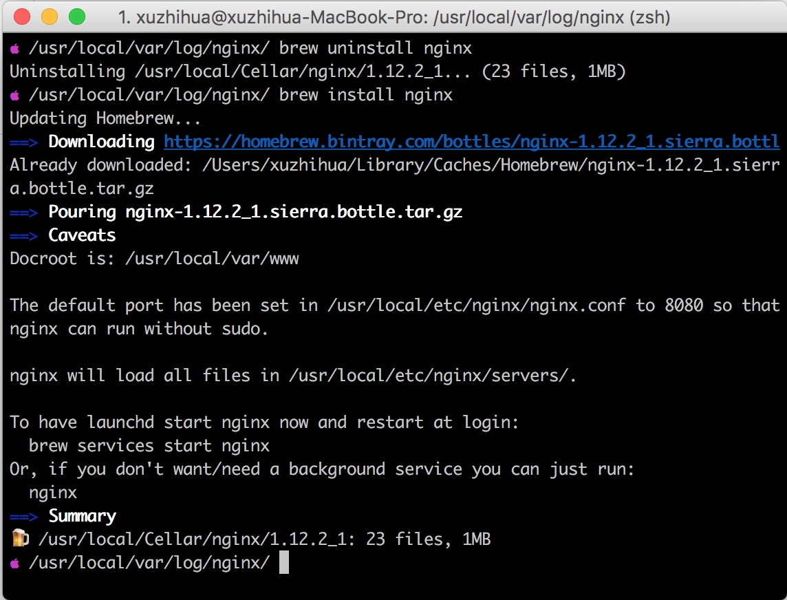
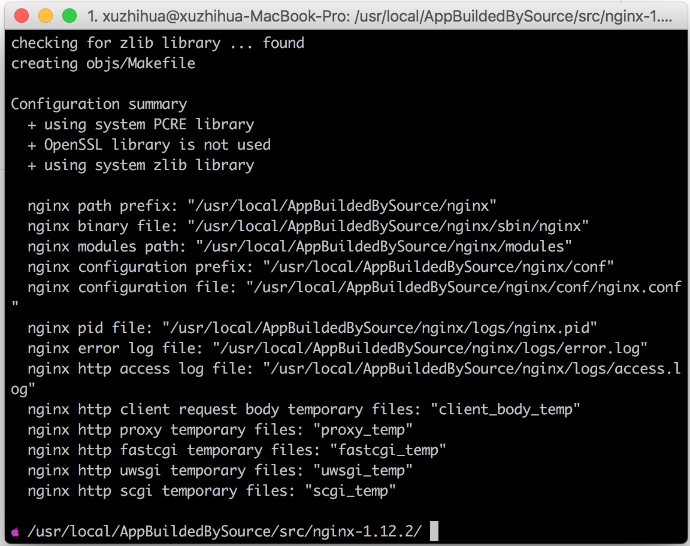

MacOS通过brew安装nginx与编译安装nginx
MacOS通过brew安装nginx与编译安装nginx
通过brew安装nginx
安装
# 打开终端，输入如下命令
brew install nginx
安装结果

目录
/usr/local/Cellar/nginx/1.12.2_1/html #网页文件路径
/usr/local/Cellar/nginx/1.12.2_1/bin #二进制文件路径
/usr/local/etc/nginx #配置文件路径
/usr/local/Cellar/nginx/1.12.2_1/logs #日志文件路径
#这里的路径可以根据 配置文件 nginx.conf 修改
启动 关闭 nginx
## 通过 brew 方式
#启动
brew services start nginx
#关闭
brew services stop nginx
## 通过信号量方式
#启动
/usr/local/Cellar/nginx/1.12.2_1/bin/nginx
#关闭
/usr/local/Cellar/nginx/1.12.2_1/bin/nginx -s stop
通过编译安装nginx
1. 创建工作目录
cd /usr/local
mkdir AppBuildedBySource
cd AppBuildedBySource
mkdir src
cd src
2. 下载 nginx 找stable版本下载
wget http://nginx.org/download/nginx-1.12.2.tar.gz
3. 解压并进入目录
tar zxvf nginx-1.12.2.tar.gz
cd nginx-1.12.2
4. 看编译是否成功
#安装到目录/usr/local/AppBuildedBySource/nginx下 执行如下命令
# prefix 参数指定编译后安装的位置
./configure --prefix=/usr/local/AppBuildedBySource/nginx

上面截图没有报错说明编译成功
5. 安装
make clean
make && make install
6. 查看安装结果
cd /usr/local/AppBuildedBySource/nginx
ls
7. 启动 关闭 nginx
#启动
/usr/local/AppBuildedBySource/nginx/bin/nginx
#关闭
/usr/local/AppBuildedBySource/nginx/bin/nginx -s stop
可以看到四个文件夹 conf 配置文件 html文件 logs日志文件 sbin二进制文件
一切大功告成